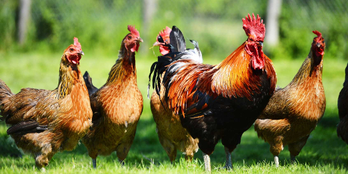

Animal Welfare¶
Ratcheting Up Standards¶
There are people who argue that all meat eating is evil and so any attempts to improve the welfare of farm animals is pointless.
It is true that the 5% of the UK population that are vegetarians do not harm animal welfare at all, however the other 95% of people do not want to do that.
It is not realistic to expect this to change any time soon. Even a massive campaign that doubles the amount of vegetarians would leave 90% of the UK population as meat eaters.
However, before they are eaten, we should give animals the highest welfare we can, they should have a chance to roam freely outdoors and have as natural as experience as possible.
Britain currently has some of the highest animal welfare standards in the world. However, we can do much better.
Until now we have been in a perverse situation, every time we unilaterally increase standards, we make our farmers less competitive, and increase the amount of imports we take and so increase the number of farm animals who live in poor conditions.
After Brexit, Agricultural policy will be completely decided by the UK government. Industry lobbies notwithstanding and whatever we agree to in new trade agreements, there far less stopping us from insisting all imports must meet our own domestic standards.
This area of full of problematic questions, including
- How free does ‘free range’ need to be?
- How organic should ‘organic’ food be?
- How should animals be killed?
- How should animals be transported?
- How is animal welfare balanced against environmental concerns?
- How is animal welfare balanced against the consumer cost of food?
- Who pays for conversion to higher standards?
- Who monitors the standards?
- Who is responsible for certifying the standards of imports?
This is not something that can become perfect overnight, but by setting the direction of travel and providing suitable incentives and conversion funding, industry and society can adapt.
To take one example, mandatory Free Range Eggs - this is a relatively quick win as half of eggs produced are already free-range. Most consumers already buy free-ranged eggs when they go to the shop.
Most of the battery eggs are used by restaurants and the catering industry. The increase in cost is fairly small, and you can still get economies of scale while increasing animal welfare.
How to pay for the policy¶
This policy can be delivered using existing budgets.
Agricultural subsidies are huge. They are based on securing the food supply in the immediate post-WW2 period. Rather than giving farmers money for nothing, we redirect the funding so that farmers receive the payments to improve animal welfare and environmental standards.
Hannah Martin, of Greenpeace UK’s Brexit response team, said: “It’s clear that there cannot be a business-as-usual approach to farm subsidies after we leave the EU. Some of the recipients of these subsidies are doing great work which benefits our environment - but others are not - and it makes no sense that the CAP’s largest subsidy payments don’t distinguish between the two.” (source)